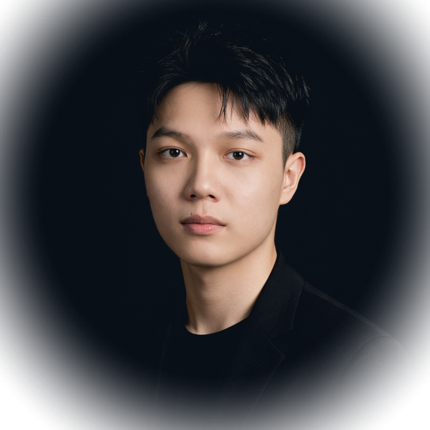
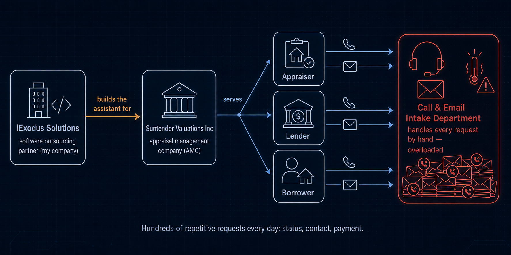
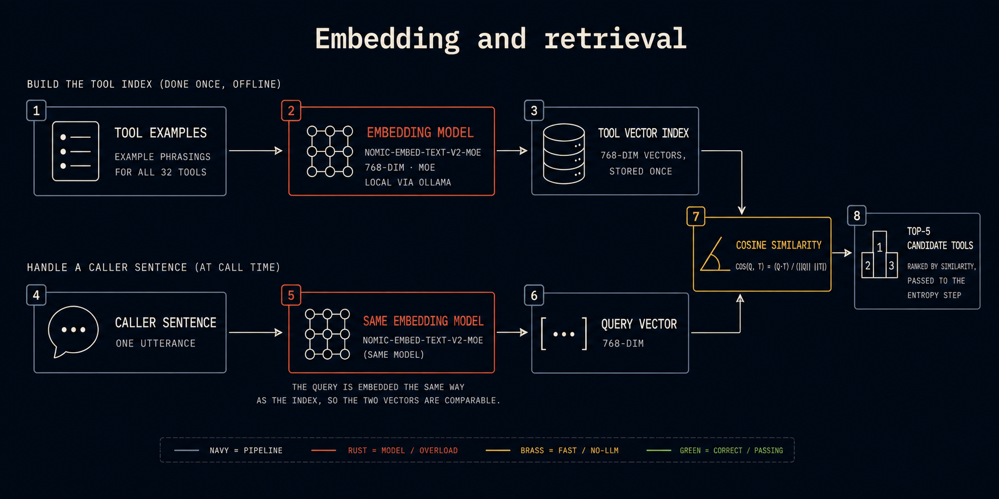
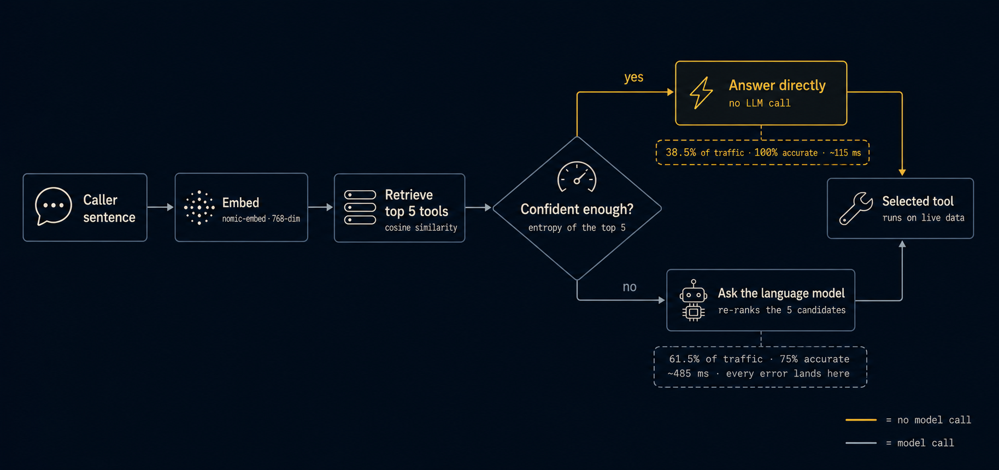
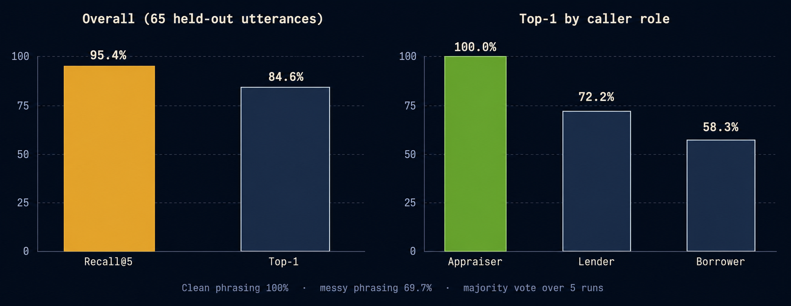
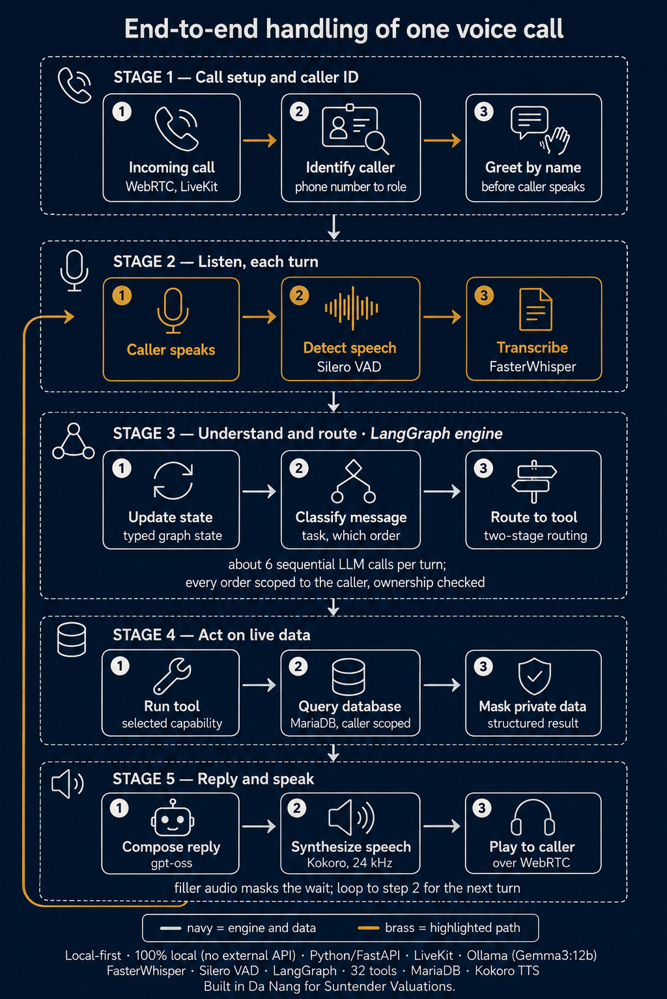

Five AI systems, built alone, running on the company's own GPUs. The idea behind the best of them: let retrieval decide first, and spend the language model only where the uncertainty actually is.

Sole AI engineer at a US appraisal company since 2023. Five systems — from framing the problem with non-technical staff, to training, to the GPU servers and database replication they run on.
I replaced an inherited regex classifier and took automated resolution from 50–60% to 95%, on 700–1,300 emails a day, unattended.
Retrieval answers when it is sure; the model is called only when it is not. Fewer calls, lower latency, and fewer errors — measured, not assumed.
Every system here runs on company GPU with no cloud AI. That constraint is what forced the interesting idea: model calls are a budget, so spend them only on genuine uncertainty.
Appraisers, lenders and borrowers all contact the same intake desk — by phone and by email. Every one of those requests used to be read and answered by a person.

Fifteen questions per email, each with 2–4 labels, across four recipient roles. As the question set grew, throughput — not accuracy — became the ceiling.
The gain did not come from a better prompt. It came from deciding, per email, which questions were worth a model call at all.
Calling the model on every sentence is slow and, measurably, where the mistakes live. So the router asks a cheaper question first: is retrieval already sure?
T = 0.08.H ≤ 0.45, with no model call at all.The threshold is a risk–coverage trade-off: push coverage up only while the accepted set stays clean.
Two rows. The top row is built once, offline: every tool's example phrasings become vectors in an index. The bottom row is what happens during a call — and the point is that both use the same model, so the vectors are comparable.

Follow a caller's sentence down the chart. It splits once — at the confidence check. Brass answers immediately with no model call; navy hands the decision to the model.

65 utterances held out of the retrieval index, all 32 tools, majority vote over five runs at temperature 0.
| Per decision | No-LLM path | Model path |
|---|---|---|
| Share of traffic | 38.5% | 61.5% |
| Accuracy | 100% | 75% |
| Latency | ~115 ms | ~485 ms |
Overall recall@5 is 95.4% and top-1 84.6%. Retrieval alone would be 76.9% — so the gate's contribution is not finding candidates, it is knowing which ones to trust.
Left: overall accuracy across the 65 held-out utterances. Right: the same measure split by caller role — which is where the weakness actually shows.


Recognized on connect from the number alone, greeted by name, then asked one natural question — routed, queried against live data, and read back aloud.
The outbound call listens before it speaks. Hearing a machine, it leaves a complete message and hangs up; hearing a person, it opens the conversation instead.
A deterministic path is worth building even when a model could do the job — here it was simultaneously the fastest and the only error-free route.
Appraisers submit photographs, PDFs and signed reports. Three production systems check them.
Sorts incoming appraisal documents into ~10 report types, trained on ~10,000 PDFs.
Several report types share almost the same vocabulary and differ mainly in structure — table position, headers, signature blocks — so a layout-aware model beat text-only classification.
Checks that a report contains the required photo of every area an appraiser must inspect, and flags what is missing. 500,000+ training images, above 90% per class.
Kept accurate by a monthly loop: QC flags wrong predictions during normal review, I relabel and retrain.
Validates that reports are actually signed. Built before object-detection tooling was available to me — so it uses no model and no training data at all.
I removed ruled lines morphologically, suppressed printed text using OCR boxes, then used FFT analysis to find the remaining irregular blobs. Rebuilt with YOLO once the tooling matured.
None of these were finished at launch. What keeps them accurate is a repeatable cycle — and a willingness to change the label definitions, not just the weights.
Every model ships as a Python service invoked by the company's PHP application under www-data — filesystem permissions, environment isolation, and clear error and exit-code contracts between two runtimes. Long jobs run under systemd.
Three Ubuntu GPU servers running all ML workloads — CUDA and driver setup, monitoring, fault diagnosis — plus MariaDB master–slave replication across three replicas, including resync after a replication break.
Nothing here was handed to a platform team. Being the only engineer meant the evaluation loop had to be simple enough that I could actually keep running it.
Happy to go as deep as you want on any of these — the methods, the evaluation, or the code.